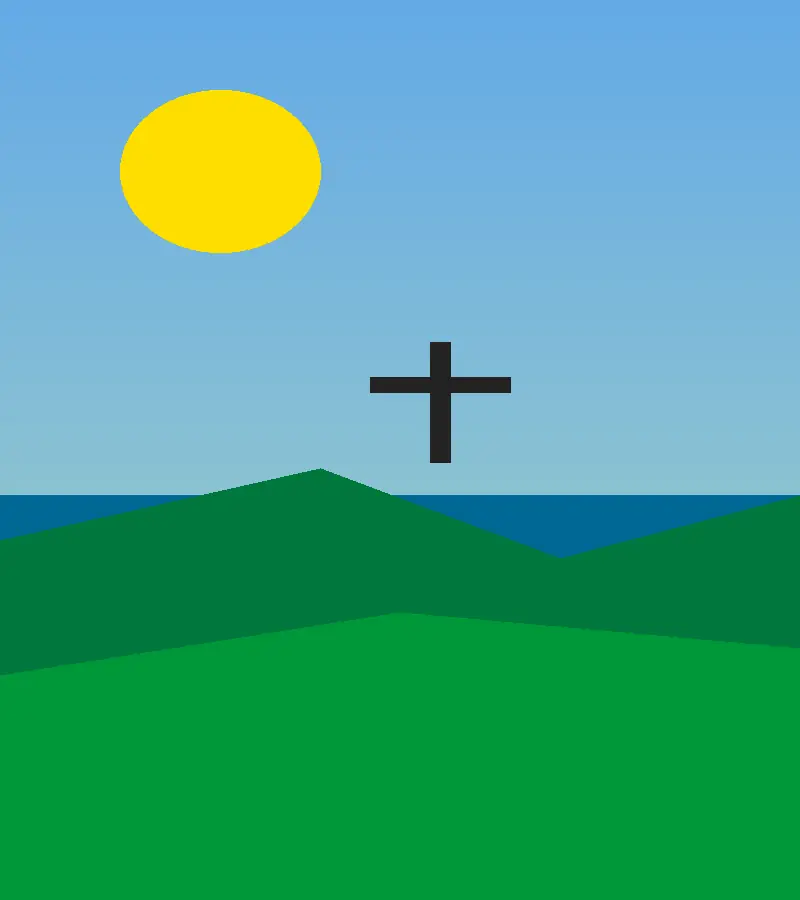

Dados
- Área
- 8.510.417 km²
- População
- aproximadamente 203 milhões
- Capital
- Brasília
- Idiomas
- Português
- Moeda
- Real (BRL)
- Fuso horário
- UTC−3 (Brasília)
- Prefixo telefônico
- +55
- Religião
- Majoritária cristã, com diversidade religiosa
Clima
Temperatura: 8 °C
Condições: Parcialmente nublado
Vento: 18 km/h
Sensação térmica: